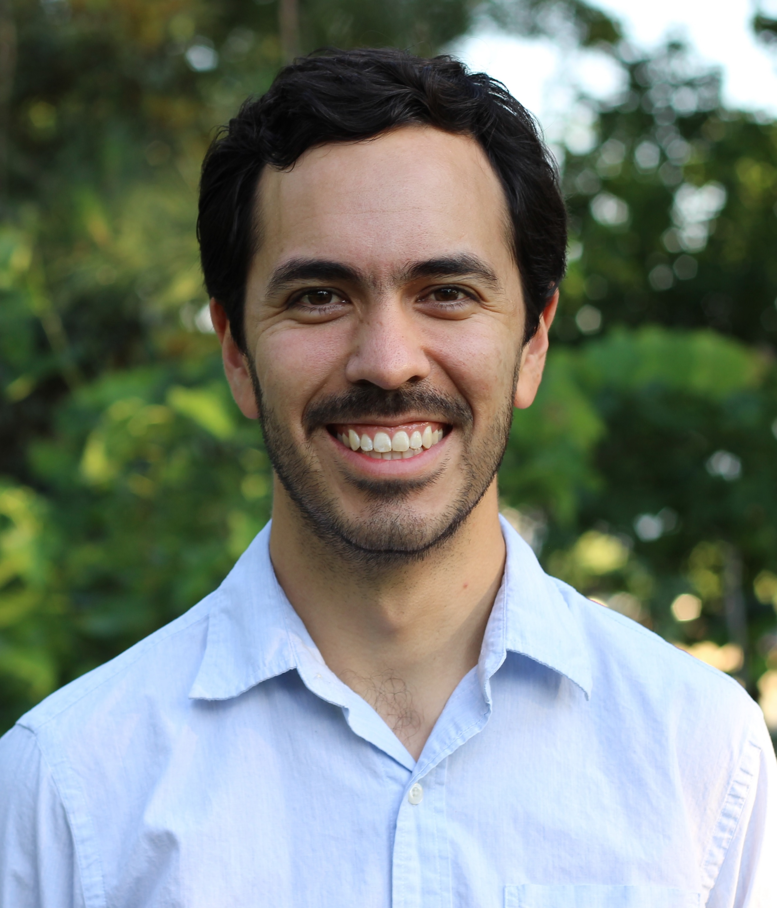
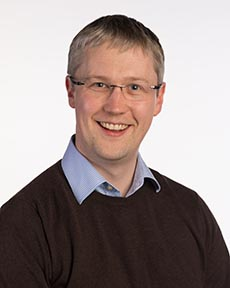

Speakers
Keynote Speakers

Nanyang Technological University
Jian Chu, President’s Chair in Civil Engineering, is the Chair of the School of Civil and Environmental Engineering and the Director of the Centre for Urban Solutions at the Nanyang Technological University (NTU), Singapore. He also worked for Iowa State University, USA, from 2011 to 2014 as professor and James M. Hoover Chair in Geotechnical Engineering. Prof Chu is currently the Chair of Technical Committee TC217 on Land Reclamation and a Committee Member for TC211 on Ground Improvement under the International Society of Soil Mechanics and Geotechnical Engineering (ISSMGE). He is an Editor of Acta Geotechnica, Editor-in-Chief of BioGeotechnics, and Associate Editor for Journal of Materials in Civil Engineering, ASCE. Prof Chu has delivered over 70 keynote or invited lectures at international conferences, including the State-of-the-art lecture at the 17th International Conference of ISSMGE in 2009. As a past President of the Geotechnical Society of Singapore, Prof Chu has worked as a consultant or advisor for several large-scale construction projects in Singapore and overseas. He received the R. M. Quigley Award from the Canadian Geotechnical Society in 2004 and the Outstanding Geotechnical Engineer Award from the Geotechnical Society of Singapore in 2018.

University of California Davis
Alejandro Martinez is an associate professor at the University of California Davis. He obtained his Ph.D. and M.S. degrees from Georgia Tech in 2015 and 2012, respectively, and his B.S. from the University of Texas at Austin in 2010. His research aims to further the understanding of soil behavior and soil-inclusion interactions involved in geotechnical engineering as well as in burrowing and locomotion. His research interests include soil-structure interaction, bio-inspired geotechnics, fabric effects on soil behavior, and static liquefaction of soils. His research employs a combination of experimental laboratory, hypergravity modeling, and numerical techniques. In 2020, he received the NSF CAREER award and in 2022 he received the ASCE Arthur Casagrande Career Development Award.

Soletanche Bachy
Annette Esnault Filet is a Senior Project Manager at Soletanche Bachy International, within the Technical Direction. An expert in the fields of biogrouting and biocalcification, she is in charge of the developments of the Biocalcis process patented by the company. Annete is responsible for the implementation of the process on real sites (feasibility study, design and controls), its optimization for new fields of applications and the coordination of research in the fields of new bio-inspired technologies and environmental solutions with the group.

Arizona State University
Dr. Anca Delgado received a Ph.D. in Microbiology from Arizona State University and is currently an Assistant Professor of Environmental Engineering in the School of Sustainable Engineering and the Built Environment and the Biodesign Swette Center for Environmental Biotechnology at Arizona State University. Dr. Delgado’s expertise is environmental biotechnology with a focus on the use of natural and artificial microbiomes for bioremediation, bioming, and production of valuable biochemicals. Dr. Delgado is a Thrust Leader and Principal Investigator in the NSF-sponsored Engineering Research Center for Bio-mediated and Bio-inspired Geotechnics (CBBG), working on geoenvironmental projects funded by NSF and CBBG-industry partners.

University of Dundee
Jonathan Knappett joined the University of Dundee as a Lecturer in 2006, following MEng and PhD degrees at the University of Cambridge. His expertise is principally in physical (centrifuge) modelling and numerical simulation and his research interests cover a range of topical dynamic and environmental soil-structure interaction problems, including the use of nature-based solutions to mitigate the effects of geohazards on infrastructure. He was awarded the British Geotechnical Association Medal in 2009, the TK Hsieh Award of the Institution of Civil Engineers (ICE) in 2010, the ISSMGE TC203 Young Researcher Award in 2018 and the Geotechnical Research Medal of the ICE in 2023. In 2017 he delivered the 13th Géotechnique Lecture on the use of vegetation in low-carbon Geotechnical Engineering. He was the Chairman (Editor in Chief) of the International Journal of Physical Modelling in Geotechnics (2014-2018), is the principal author of the textbook Craig’s Soil Mechanics and is a Chartered Civil Engineer.
North Carolina State University
Brina Montoya is an Associate Professor in the Department of Civil, Construction, and Environmental Engineering at North Carolina State University. Dr. Montoya’s research interests focus on bio-mediated stabilization approaches to improve the sustainability and resiliency of infrastructure, specifically with regards to infrastructure subjected to natural hazards, such as earthquake-induced liquefaction and coastal erosion, and addressing anthropogenic hazards, such as stabilizing tailings impoundments and carbon sequestration. Her research has been recognized with several honors, including the NSF CAREER Award, the ASCE Arthur Casagrande Professional Development Award, and the USUCGER Early Career Research Award. She received her Ph.D. from the University of California, Davis in 2012. Prior to entering graduate school, Dr. Montoya worked for a consulting geotechnical engineering company in the San Francisco Bay Area, focusing on foundation design and liquefaction mitigation. She is a licensed engineer in the state of California.